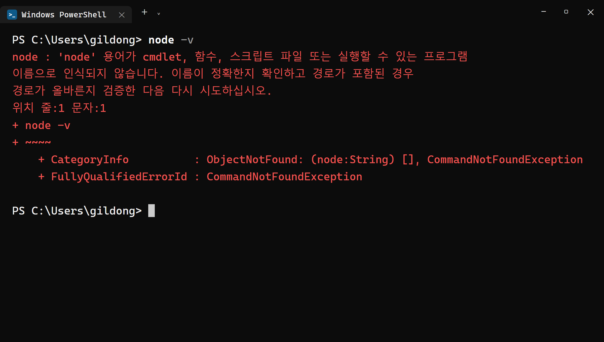
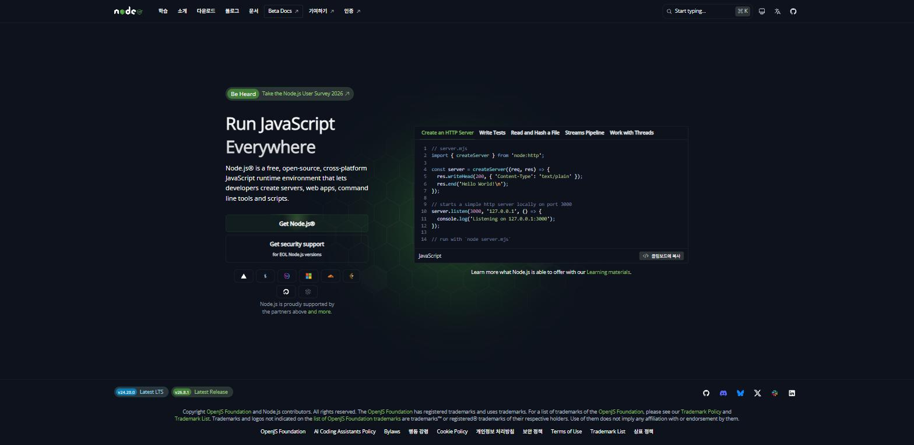
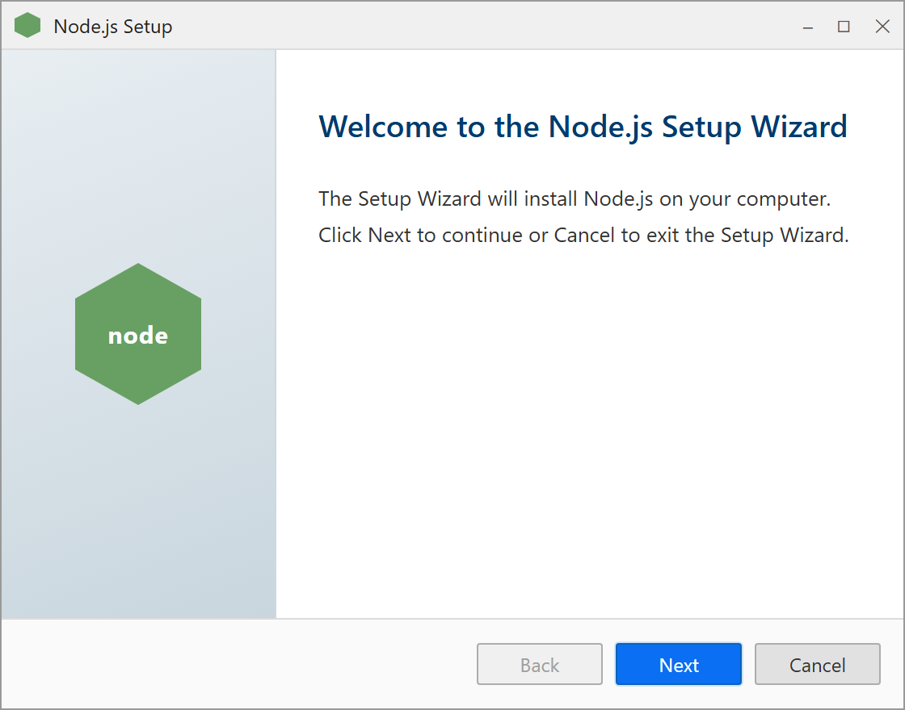
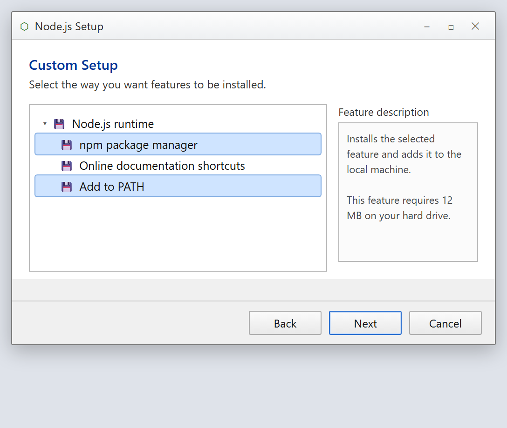
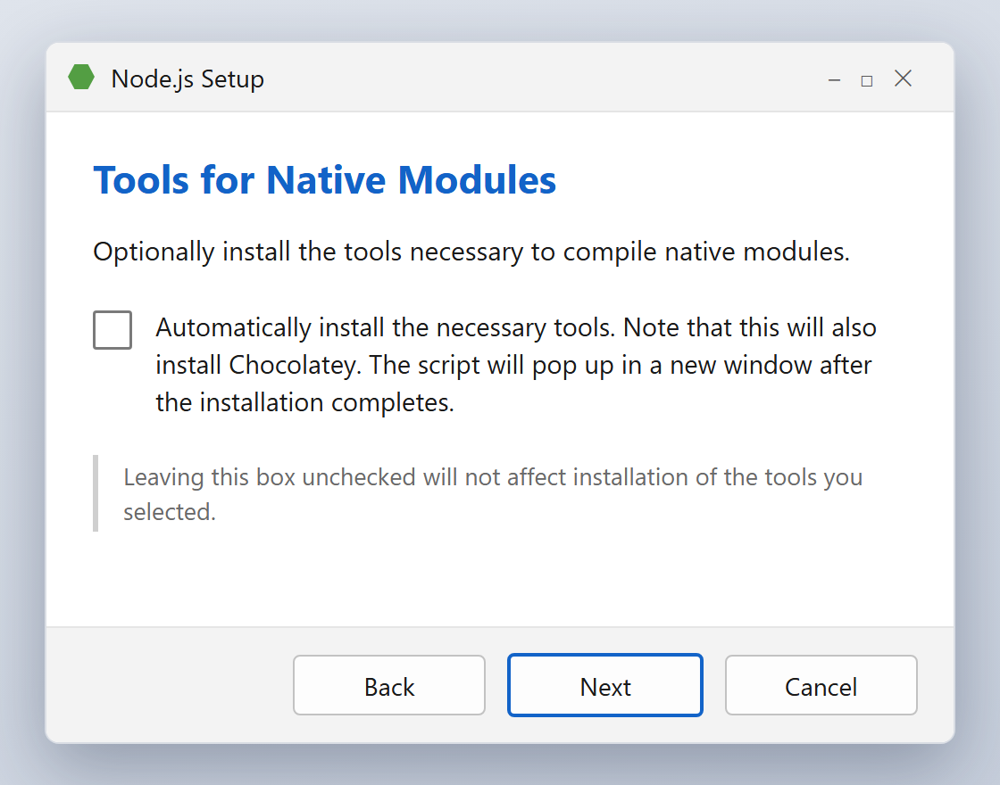
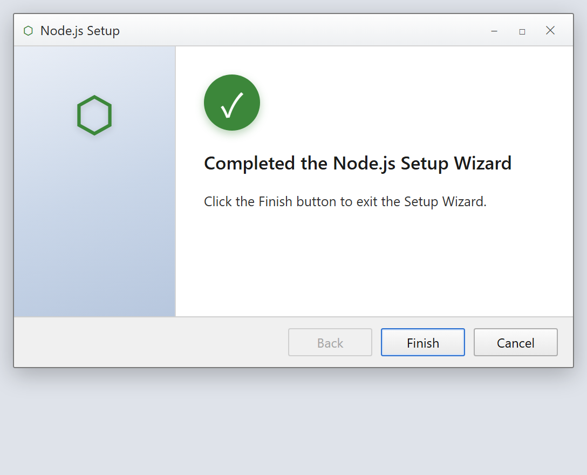
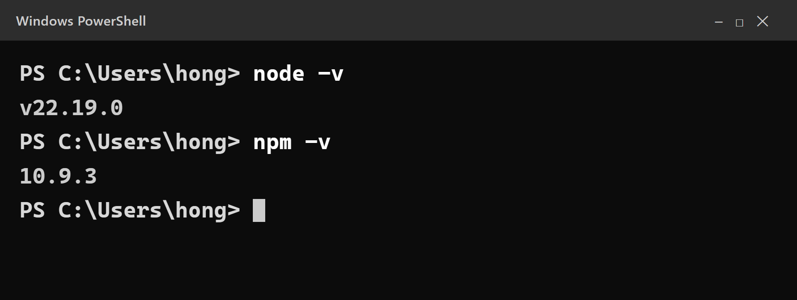
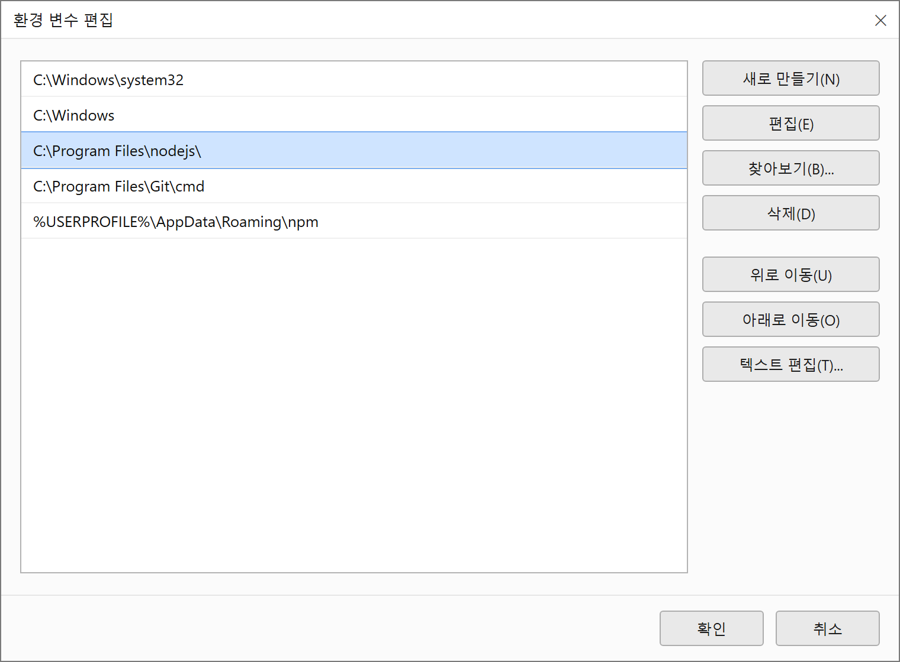

2장 Node.js 설치¶
이 장에서 배우는 것
- Node.js가 무엇이고, 왜 이 책의 모든 도구가 Node.js 위에서 도는지 이해합니다
- 내 컴퓨터에 Node.js가 이미 있는지
node -v로 확인합니다 - nodejs.org에서 LTS 버전을 내려받아 윈도우에 설치합니다
- "명령을 찾을 수 없습니다"라는 PATH 오류를 스스로 해결합니다
- npm이 무엇인지, 앞으로 어디에 쓰는지 감을 잡습니다
2.1 Node.js가 왜 필요한가요¶
1장에서 우리는 "코드는 AI에게 시키고, 나는 지휘한다"는 바이브코딩의 마음가짐을 배웠습니다. 그런데 지휘를 하려면 무대가 먼저 있어야 합니다. 이번 장부터 6장까지는 그 무대, 즉 개발 환경을 차근차근 설치합니다. 그 첫 번째 주인공이 바로 Node.js입니다.
Node.js를 한 문장으로 말하면 이렇습니다. "웹 브라우저 바깥에서 자바스크립트를 실행해 주는 프로그램"입니다.
원래 자바스크립트는 웹 페이지 안에서만 살 수 있는 언어였습니다. 크롬이나 엣지 같은 브라우저가 열어 준 페이지 안에서만 동작했지요. 그런데 2009년에 Node.js가 등장하면서 이야기가 달라졌습니다. 브라우저 없이도, 그러니까 내 컴퓨터의 터미널에서 곧바로 자바스크립트를 돌릴 수 있게 된 것입니다. 덕분에 자바스크립트로 서버도 만들고, 개발 도구도 만들고, 명령줄 프로그램도 만들 수 있게 되었습니다.
"나는 지도 웹앱을 만들고 싶은 건데, 브라우저 바깥 이야기가 왜 필요하지?"라는 의문이 들 수 있습니다. 좋은 질문입니다. 이 책에서 우리가 쓸 핵심 도구 두 가지가 모두 Node.js 위에서 돌기 때문입니다.
첫째, Vite(비트, 8장에서 만납니다)입니다. Vite는 우리가 지도 앱을 개발하는 동안 옆에서 개발 서버를 띄워 주고, 코드를 고칠 때마다 브라우저 화면을 자동으로 새로고침해 주는 도구입니다. 이 Vite가 바로 Node.js로 만들어진 프로그램입니다. Node.js가 없으면 Vite는 시작조차 하지 못합니다.
둘째, Claude Code(4장에서 설치합니다)입니다. 우리 대신 코드를 써 줄 AI 에이전트 역시 Node.js로 만들어진 명령줄 프로그램입니다. 설치할 때도 잠시 뒤에 소개할 npm이라는 Node.js의 패키지 관리자를 사용합니다.
비유하자면 이렇습니다. 우리가 만들 지도 앱이 공연이라면, 카카오지도는 무대 위의 배우이고, Vite는 조명과 음향을 맡은 스태프이며, Claude Code는 대본을 써 주는 작가입니다. 그리고 Node.js는 이들이 모두 올라설 무대 바닥입니다. 무대가 없으면 배우도 스태프도 작가도 일할 곳이 없지요. 관객(사용자)의 눈에는 보이지 않지만, 없으면 공연 자체가 열리지 못하는 존재입니다.
정리하면 이렇습니다. Node.js는 이 책의 기초 공사입니다. 건물을 올리기 전에 땅을 다지듯, 지도 앱을 만들기 전에 Node.js부터 깝니다. 한 가지 미리 안심시켜 드리면, 이 책에서 여러분이 Node.js를 직접 프로그래밍할 일은 없습니다. Vite와 Claude Code가 알아서 Node.js를 사용하고, 우리는 그 위에서 지휘만 하면 됩니다. 설치 자체는 10분이면 끝나니 부담 갖지 않으셔도 됩니다.
💡 팁
Node.js라는 이름의 "js"는 JavaScript(자바스크립트)의 줄임말입니다. 앞으로 파일 이름 끝에 붙는 .js 확장자를 자주 보게 될 텐데, 모두 자바스크립트 파일이라는 뜻입니다.
2.2 먼저 확인부터 — 이미 설치되어 있을 수도 있습니다¶
무엇이든 설치하기 전에 확인하는 습관을 들입시다. 예전에 다른 프로그램을 깔면서 Node.js가 함께 설치되었을 수도 있으니까요. 확인하는 곳은 터미널입니다.
터미널은 글자로 컴퓨터에게 명령을 내리는 창입니다. 마우스로 아이콘을 클릭하는 대신, 키보드로 명령어를 입력하지요. 바이브코딩에서는 이 터미널이 우리의 지휘소가 되니, 여는 방법부터 손에 익혀 둡시다.
윈도우에서 터미널을 여는 가장 쉬운 방법은 이렇습니다.
- 키보드에서 윈도우 키를 누릅니다.
- 검색창에 terminal 또는 터미널이라고 입력합니다.
- 터미널(Windows Terminal) 앱이 보이면 클릭해서 엽니다.
검은색(또는 흰색) 창이 뜨고, PS C:\Users\사용자이름> 같은 글자가 보이면 성공입니다. 이 글자를 프롬프트라고 부릅니다. "명령을 입력해 주세요"라며 컴퓨터가 기다리고 있다는 표시입니다.
💡 팁
윈도우 10 일부 버전에는 Windows Terminal이 기본 설치되어 있지 않을 수 있습니다. 그럴 때는 검색창에 PowerShell(파워셸)이라고 입력해서 나오는 파란 아이콘을 열면 됩니다. 이 책에서 하는 작업은 둘 중 무엇을 써도 똑같이 됩니다.
이제 프롬프트에 아래 명령을 입력하고 Enter 키를 눌러 봅시다.
node는 Node.js를 부르는 명령이고, -v는 "버전(version)을 알려 줘"라는 옵션입니다. 결과는 둘 중 하나입니다.
경우 1 — 버전 번호가 나온다. v22.19.0처럼 v로 시작하는 숫자가 출력되면 이미 Node.js가 설치되어 있는 것입니다. 다만 버전이 너무 낮으면(예: v16 이하) 이 책의 도구들이 제대로 돌지 않을 수 있습니다. 앞자리 숫자가 20 이상이면 그대로 써도 좋고, 그보다 낮으면 이번 장을 따라 최신 LTS로 다시 설치해 주세요. 새로 설치하면 기존 버전 위에 덮어써집니다.
경우 2 — 오류가 나온다. 아래와 비슷한 빨간 글씨가 나오면 아직 Node.js가 없는 것입니다.
당황할 필요 없습니다. "그런 프로그램 못 찾겠는데요?"라는 뜻일 뿐입니다. 지금부터 설치하면 됩니다.
여기서 터미널 사용 요령 두 가지만 미리 익혀 둡시다. 앞으로 이 책 내내 써먹게 됩니다. 첫째, 위쪽 화살표(↑) 키를 누르면 방금 입력했던 명령이 다시 나타납니다. 같은 명령을 여러 번 실행할 때 일일이 다시 칠 필요가 없습니다. 둘째, 터미널에서 붙여넣기는 마우스 오른쪽 클릭 또는 Ctrl+V로 합니다. 책에 나오는 명령을 눈으로 보고 한 자씩 옮겨 적다 보면 오타가 나기 쉬우니, 전자책으로 보시는 분은 복사해서 붙여넣는 편이 정확합니다. 다만 명령이 무슨 뜻인지 한 번씩 소리 내어 읽어 보는 습관은 들여 두세요. 바이브코딩은 코드를 외우는 공부는 아니지만, 내가 무엇을 실행하는지는 알고 실행하는 공부입니다.

2.3 nodejs.org에서 LTS 내려받기¶
이제 공식 홈페이지에서 설치 파일을 받겠습니다. 브라우저를 열고 주소창에 아래 주소를 입력합니다.
첫 화면에 커다란 다운로드 버튼이 보입니다. 버튼에는 버전 번호와 함께 LTS라는 글자가 붙어 있습니다.
여기서 잠깐, LTS가 무엇인지 짚고 갑시다. LTS는 Long Term Support, 우리말로 장기 지원 버전이라는 뜻입니다. Node.js는 새 기능을 실험하는 Current(최신) 버전과, 안정성이 검증되어 오래 지원되는 LTS 버전 두 갈래로 배포됩니다. 스마트폰에 비유하면 Current는 이번 주에 나온 베타 운영체제이고, LTS는 몇 달 동안 수많은 사람이 써 보며 문제를 걸러낸 정식 버전입니다. 최신 기능보다 "말썽 없이 잘 도는 것"이 중요한 우리 같은 사용자에게는 언제나 LTS가 정답입니다. 참고로 Node.js는 짝수 번호 버전만 LTS가 되는 전통이 있습니다. 20, 22, 24처럼 짝수 버전은 시간이 지나면 LTS로 승격되고, 21, 23 같은 홀수 버전은 실험용으로 쓰이다 사라집니다. 이 책을 쓰는 시점의 LTS는 v22 계열이지만, 여러분이 보는 화면에는 더 높은 숫자가 적혀 있을 수 있습니다. 숫자가 몇이든 LTS라고 적힌 쪽을 받으면 됩니다.
다운로드 페이지에서 운영체제가 Windows로, 설치 방식이 Installer(.msi) 로 선택되어 있는지 확인하고 초록색 다운로드 버튼을 누릅니다. 대부분은 자동으로 윈도우용이 선택되어 있습니다. node-v22.19.0-x64.msi 같은 이름의 파일이 다운로드 폴더에 저장됩니다.

🍎 Mac 사용자라면
같은 페이지에서 macOS Installer(.pkg) 를 내려받아 더블클릭하고, 안내에 따라 "계속"만 몇 번 누르면 설치가 끝납니다. 설치 후 확인 방법(node -v, npm -v)은 윈도우와 완전히 같습니다. 터미널은 Spotlight(⌘+Space)에서 "터미널"을 검색해 엽니다. 이후 장에서도 명령어는 윈도우와 거의 동일하니, 이 책의 터미널 명령을 그대로 따라 하시면 됩니다.
💡 팁
터미널에 익숙한 분이라면 홈페이지에 가지 않고도 설치할 수 있습니다. 윈도우에 내장된 패키지 관리자 winget으로 winget install OpenJS.NodeJS.LTS 한 줄이면 끝납니다. 다만 처음이라면 이번 장의 설치 마법사 방식을 권합니다. 어떤 화면이 지나가는지 눈으로 보아 두는 것도 공부가 되니까요.
2.4 설치 마법사, 단계별로 따라가기¶
다운로드한 .msi 파일을 더블클릭하면 설치 마법사가 시작됩니다. 화면이 예닐곱 번 넘어가는데, 결론부터 말하면 전부 기본값 그대로 Next만 눌러도 됩니다. 그래도 각 화면이 무엇을 묻는 것인지 알고 넘어가면 나중에 다른 프로그램을 설치할 때도 두렵지 않으니, 하나씩 짚어 보겠습니다.
① 시작 화면(Welcome). "Node.js 설치 마법사에 오신 것을 환영합니다"라는 인사말이 나옵니다. Next를 누릅니다.

② 라이선스 동의(License Agreement). 소프트웨어 사용 약관입니다. Node.js는 무료 오픈소스라 부담 없이 동의해도 됩니다. I accept the terms in the License Agreement에 체크하고 Next를 누릅니다.
③ 설치 위치(Destination Folder). 어디에 설치할지 묻습니다. 기본값은 C:\Program Files\nodejs\입니다. 바꾸지 말고 그대로 Next를 누릅니다. 나중에 문제가 생겼을 때 기본 경로여야 원인을 찾기 쉽습니다.
④ 구성 요소 선택(Custom Setup). 무엇을 함께 설치할지 트리 모양 목록으로 보여 줍니다. 여기에 중요한 항목이 두 개 있습니다. npm package manager(잠시 뒤에 소개할 npm), 그리고 Add to PATH(터미널 어디에서든 node 명령을 쓸 수 있게 등록)입니다. 둘 다 기본으로 선택되어 있으니 건드리지 말고 Next를 누릅니다. 특히 Add to PATH가 빠지면 2.6절의 오류를 만나게 되니, 눈으로 한 번 확인만 해 두세요.

⑤ 네이티브 모듈 도구(Tools for Native Modules). "일부 npm 패키지는 C/C++ 컴파일이 필요한데, 그 도구를 자동으로 설치할까요?"라고 묻는 화면입니다. 체크박스가 하나 있는데, 체크하지 않고 그냥 Next를 누르세요. 이 책의 지도 앱에는 필요하지 않고, 체크하면 설치 시간이 크게 늘어납니다. 나중에 필요해지면 그때 설치해도 늦지 않습니다.

⑥ 설치 시작(Ready to install). Install 버튼을 누릅니다. 이때 "이 앱이 디바이스를 변경할 수 있도록 허용하시겠어요?"라는 파란 창(사용자 계정 컨트롤)이 뜨면 예를 누릅니다. 프로그램을 시스템에 설치하는 것이니 허용해야 진행됩니다.
⑦ 완료(Finish). 초록 진행 막대가 다 차고 나면 완료 화면이 나옵니다. Finish를 눌러 마법사를 닫습니다.

⚠️ 주의
설치가 끝났어도 이미 열려 있던 터미널 창은 Node.js를 모릅니다. 터미널은 열리는 순간의 시스템 설정을 기억하기 때문에, 설치 전에 열어 둔 창에서는 여전히 node를 찾지 못합니다. 반드시 터미널을 완전히 닫았다가 새로 열고 다음 절의 확인을 진행하세요. 설치 후 가장 많이 겪는 실수 1위입니다.
2.5 설치 확인 — 오늘의 합격 도장¶
터미널을 새로 열고, 이번에는 두 가지 명령을 차례로 입력해 봅시다.
첫 줄에서 v22.19.0처럼 v로 시작하는 버전이, 둘째 줄에서 10.9.3처럼 숫자로 된 버전이 출력되면 합격입니다. 숫자가 책과 조금 달라도 괜찮습니다. LTS는 계속 업데이트되니까요. 중요한 것은 오류 없이 버전이 찍힌다는 사실입니다.

축하합니다. 여러분의 컴퓨터는 이제 자바스크립트를 실행할 수 있는 무대가 되었습니다. 기념으로 아주 작은 것 하나만 실행해 볼까요? 터미널에 아래를 입력해 봅시다.
2가 출력됩니다. -e 옵션은 "따옴표 안의 자바스크립트 코드를 바로 실행해 줘"라는 뜻이고, console.log는 결과를 화면에 찍는 명령입니다. 방금 여러분은 브라우저 없이 자바스크립트를 실행했습니다. 이것이 바로 Node.js가 하는 일입니다. 이 한 줄의 의미는 몰라도 앞으로 진도에 아무 지장이 없으니, "아, 터미널에서도 자바스크립트가 도는구나" 하는 느낌만 챙겨 가시면 충분합니다.
2.6 "명령을 찾을 수 없습니다" — PATH 문제 해결¶
새 터미널에서도 여전히 'node' 용어가 인식되지 않습니다 오류가 난다면, 십중팔구 PATH 문제입니다. 여기서 막히는 분이 많으니 원리부터 차분히 설명하겠습니다.
터미널에 node라고 입력하면, 윈도우는 컴퓨터 전체를 뒤지는 게 아니라 PATH라는 목록에 적힌 폴더들만 순서대로 열어 보며 node.exe라는 파일을 찾습니다. PATH는 말하자면 윈도우의 단축 다이얼 목록입니다. 목록에 C:\Program Files\nodejs\가 등록되어 있으면 어느 폴더에서든 node 한 마디로 실행되고, 등록되어 있지 않으면 파일이 멀쩡히 있어도 "그런 프로그램 없는데요"라는 답이 돌아옵니다.
실생활에 비유하면 이렇습니다. 친구에게 "철수한테 전화해 줘"라고 부탁했는데 친구의 연락처 목록에 철수가 없다면, 철수가 실제로 존재하는 사람이어도 친구는 전화를 걸 수 없습니다. 철수(node.exe)는 멀쩡히 있는데 연락처 목록(PATH)에 번호가 등록되지 않은 상황, 이것이 바로 지금 우리가 겪는 오류입니다. 해결책도 똑같습니다. 연락처에 번호를 등록해 주면 됩니다.
설치 마법사의 Add to PATH 항목이 이 등록을 대신해 주는데, 드물게 등록이 누락되거나 꼬이는 경우가 있습니다. 아래 순서로 점검해 봅시다.
1단계 — 재부팅. 가장 간단하고 의외로 잘 듣는 방법입니다. 컴퓨터를 다시 시작하면 PATH 변경 사항이 모든 프로그램에 확실히 반영됩니다. 재부팅 후 새 터미널에서 node -v를 다시 실행해 보세요.
2단계 — 파일이 실제로 있는지 확인. 파일 탐색기로 C:\Program Files\nodejs 폴더를 열어 봅니다. 폴더 안에 node.exe가 보이면 설치 자체는 된 것이고 PATH 등록만 문제라는 뜻입니다. 폴더 자체가 없다면 설치가 실패한 것이니 2.4절의 설치를 처음부터 다시 진행하세요.
3단계 — PATH에 직접 등록. 파일은 있는데 명령만 안 된다면 PATH에 손으로 등록합니다.
- 윈도우 키를 누르고 환경 변수라고 검색한 뒤 시스템 환경 변수 편집을 엽니다.
- 창 아래쪽의 환경 변수(N)... 버튼을 누릅니다.
- 아래쪽 시스템 변수 목록에서 Path를 찾아 선택하고 편집(I)... 을 누릅니다.
- 목록에
C:\Program Files\nodejs\가 있는지 확인합니다. 없으면 새로 만들기(N) 를 눌러C:\Program Files\nodejs\를 입력합니다. - 확인을 세 번 눌러 모든 창을 닫습니다.
- 터미널을 새로 열고
node -v를 다시 실행합니다.

4단계 — 그래도 안 되면 재설치. 제어판(설정 → 앱 → 설치된 앱)에서 Node.js를 제거한 뒤, 2.3절부터 다시 설치합니다. 이번에는 Custom Setup 화면에서 Add to PATH가 선택되어 있는지 꼭 눈으로 확인하세요.
💡 팁
PATH 개념은 Node.js만의 이야기가 아닙니다. 3장의 Git, 5장의 GitHub CLI도 설치되면 PATH에 등록되어야 터미널에서 git, gh로 부를 수 있습니다. 앞으로 어떤 도구든 "설치했는데 명령이 안 먹혀요" 상황을 만나면, 오늘 배운 순서 그대로 ①터미널 새로 열기 → ②재부팅 → ③PATH 확인을 떠올리세요. 개발자들도 똑같이 이 순서로 해결합니다.
2.7 덤으로 따라온 npm — 개발 도구의 앱스토어¶
2.5절에서 npm -v도 함께 확인했지요. npm은 우리가 따로 설치한 적이 없는데도 Node.js를 깔 때 함께 들어왔습니다. npm이 무엇인지 미리 인사만 해 둡시다.
npm은 Node Package Manager의 줄임말로, 자바스크립트 세계의 앱스토어라고 생각하면 됩니다. 스마트폰에 앱을 깔 때 앱스토어에서 검색해 설치 버튼을 누르듯, 개발 도구나 코드 꾸러미(이것을 패키지라고 부릅니다)가 필요할 때 npm에게 명령 한 줄로 부탁하면 알아서 내려받아 설치해 줍니다. 전 세계 개발자들이 만들어 올린 패키지가 수백만 개나 등록되어 있는, 세계에서 가장 큰 코드 저장소입니다.
이 책에서 npm은 앞으로 두 장면에서 결정적으로 등장합니다.
- 4장:
npm install -g @anthropic-ai/claude-code— Claude Code를 설치할 때 - 8장:
npm create vite@latest— 지도 앱 프로젝트를 처음 만들 때
그리고 바이브코딩 관점에서 한 가지 더 말씀드리면, 앞으로 npm 명령을 여러분이 손으로 입력하는 일조차 많지 않을 것입니다. 8장 이후로는 Claude Code에게 "이러이러한 기능을 만들어 줘"라고 시키면, 필요한 패키지가 있을 때 에이전트가 알아서 npm install 명령을 실행하겠다고 제안합니다. 여러분은 그 제안을 보고 승인만 하면 됩니다. 그래도 오늘 npm의 정체를 알아 두는 이유는, 에이전트가 "이 패키지를 설치하겠습니다"라고 물어 왔을 때 그것이 무슨 뜻인지 이해하고 승인하기 위해서입니다. 무엇을 승인하는지 아는 지휘자와 모르는 지휘자의 차이는 생각보다 큽니다.
지금은 명령을 외울 필요가 전혀 없습니다. "npm은 도구를 설치해 주는 도구이고, Node.js를 깔면 공짜로 따라온다"라는 것만 기억하면 이번 장의 목표는 전부 달성입니다.
💡 팁
node -v의 버전과 npm -v의 버전은 서로 다른 숫자입니다. Node.js가 v22인데 npm이 10이라고 해서 뭔가 잘못된 게 아닙니다. 둘은 별개의 프로그램이라 각자의 버전 번호를 가질 뿐입니다.
2.8 마무리¶
이번 장에서 우리는 바이브코딩 무대의 기초 공사를 마쳤습니다. 터미널을 여는 법, 버전을 확인하는 법, 그리고 문제가 생겼을 때 PATH를 점검하는 법까지 배웠으니, 단순히 프로그램 하나를 설치한 것 이상의 소득입니다. 다음 장에서는 두 번째 기초 공사인 Git을 설치합니다.
📌 핵심 요약
- Node.js는 브라우저 밖에서 자바스크립트를 실행해 주는 프로그램으로, 이 책의 Vite와 Claude Code가 모두 그 위에서 동작합니다
- 설치 전 터미널에서
node -v로 이미 설치되어 있는지 먼저 확인합니다 - nodejs.org에서는 항상 LTS(장기 지원 버전)를 내려받고, 설치 마법사는 기본값 그대로 진행합니다
- 설치 후에는 터미널을 새로 열어
node -v와npm -v로 확인합니다 - "명령을 찾을 수 없습니다" 오류는 PATH 문제 — ①새 터미널 ②재부팅 ③환경 변수의 Path 확인 순서로 해결합니다
- npm은 Node.js에 딸려 오는 패키지 관리자로, 4장(Claude Code 설치)과 8장(Vite 프로젝트 생성)에서 사용합니다
🤔 생각해보기
Q1. 설치 직후 기존에 열려 있던 터미널에서 node -v가 실패하는 이유는 무엇이고, 어떻게 해결해야 할까요?
✍️ ________
✍️ ________
Q2. 최신 기능이 더 많은 Current 버전 대신 LTS 버전을 설치하라고 권하는 이유는 무엇일까요?
✍️ ________
✍️ ________
✏️ 연습 문제
- 터미널을 열고
node -v와npm -v를 실행해, 출력된 두 버전 번호를 책 여백에 적어 보세요. node -e "console.log(7 * 6)"을 실행해 보고, 어떤 숫자가 출력되는지 확인해 보세요.- "시스템 환경 변수 편집" 창을 직접 열어, Path 목록에서
C:\Program Files\nodejs\항목을 찾아보세요. (찾기만 하고 수정하지는 마세요!) - 파일 탐색기로
C:\Program Files\nodejs폴더를 열어node.exe와npm관련 파일들이 실제로 있는지 눈으로 확인해 보세요.
🔎 더 찾아보기
nvm-windows— 한 컴퓨터에 여러 Node.js 버전을 설치해 두고 골라 쓰게 해 주는 버전 관리 도구npx— 패키지를 설치하지 않고 한 번만 빌려 실행하는 npm의 형제 명령package.json— npm이 프로젝트의 패키지 목록을 기록해 두는 파일 (8장에서 직접 만나게 됩니다)Node.js 릴리스 일정— nodejs.org의 Release Schedule 페이지에서 LTS 버전들의 지원 기간을 볼 수 있습니다
다음 장 예고 — 3장에서는 Git for Windows를 설치합니다. Git은 코드의 모든 변경 이력을 기록해 두었다가 언제든 과거로 되돌릴 수 있게 해 주는 도구입니다. AI에게 코드를 맡기는 바이브코딩에서 "잘못되면 되돌리면 된다"는 안전벨트가 되어 줄, 어쩌면 이 책에서 가장 중요한 준비물입니다.